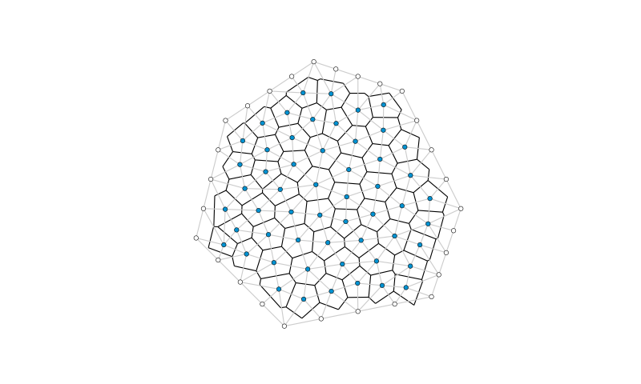

voronoi_from_delaunay
-
compas.topology.voronoi_from_delaunay(delaunay)[source] Construct the Voronoi dual of the triangulation of a set of points.
- Parameters
delaunay (Mesh) – A delaunay mesh.
- Returns
Mesh – The corresponding voronoi mesh.
Warning
This function does not work properly if all vertices of the delaunay are on the boundary.
Example
from compas.datastructures import Mesh from compas.topology import trimesh_remesh from compas.topology import delaunay_from_points from compas.topology import voronoi_from_delaunay from compas.geometry import pointcloud_xy from compas.plotters import MeshPlotter points = pointcloud_xy(10, (0, 10)) faces = delaunay_from_points(points) delaunay = Mesh.from_vertices_and_faces(points, faces) trimesh_remesh(delaunay, 1.0, allow_boundary_split=True) points = [delaunay.vertex_coordinates(key) for key in delaunay.vertices()] faces = delaunay_from_points(points) delaunay = Mesh.from_vertices_and_faces(points, faces) voronoi = voronoi_from_delaunay(delaunay) lines = [] for u, v in voronoi.edges(): lines.append({ 'start': voronoi.vertex_coordinates(u, 'xy'), 'end' : voronoi.vertex_coordinates(v, 'xy'), 'width': 1.0 }) plotter = MeshPlotter(delaunay, figsize=(10, 6)) plotter.draw_lines(lines) plotter.draw_vertices( radius=0.075, facecolor={key: '#0092d2' for key in delaunay.vertices() if key not in delaunay.vertices_on_boundary()}) plotter.draw_edges(color='#cccccc') plotter.show()
